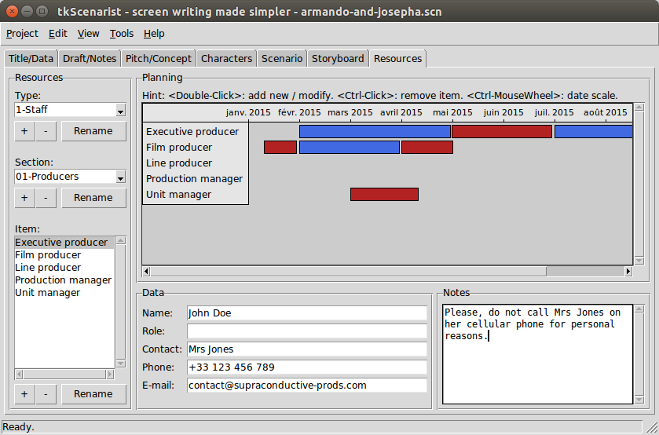

App by tabs
'Resources' tab
Summary
Screenshot

Return to summary.
Introduction
This app tab allows multiple resources management.
It is an independent part of the software you may use as if you like.
It is composed of:
- a 'Resources' pane, on top left side;
- a 'Planning' pane, on top right side;
- a 'Data' pane, on bottom right side.
All section panes are resizable: put mouse pointer between each pane, then click and drag sash to get desired size.
Return to summary.
Usage
'Resources' pane
Resource dropdown lists
The 'Type' and 'Section' selectors are dropdown lists.
Click on right side arrowed button to get list of choices and to select a given item.
Click on + button underneath to add a new resource item.
Click on Rename button to rename selected list item.
Click on - button to delete selected resource item.
A confirmation dialog will popup before deleting definitely.
Return to summary.
Item browser
The 'Item' choicelist is an open list of choices.
Its content depends on selections made into 'Type' and 'Section' dropdown lists.
Return to summary.
Adding an item
Click on + button underneath the list box to add a new resource item.
Return to summary.
Filling out item's form
Click into each form entry (white text zone) and fill out with relevant data.
Please, note this item data form manages with automatic backup feature: anything you enter into form fields will be automatically saved into software's memory. However, this does not exempt you from saving your project file regularly.
Return to summary.
Renaming an item
Select the desired item into the 'Item' list box and then click on
Rename button to rename this item.
Return to summary.
Deleting an item
Select the desired item into the 'Item' list box and then click on -
button.
A confirmation dialog will popup before deleting definitely.
Return to summary.
'Planning' pane
Screenshot

Return to summary.
Adding a date bar
Simply double-click on a canvas empty zone (no date bars underneath), at resource item's label level.
An input dialog will then popup to help you filling out date intervals and resource availability.
Please, note date overlappings are under user's entire responsibility. This software is NOT a resource planner expert.
Return to summary.
Updating a date bar
Double-click on the desired date bar, whatever colour is.
An input dialog will then popup to help you filling out date intervals and resource availability.
Please, note date overlappings are under user's entire responsibility. This software is NOT a resource planner expert.
Return to summary.
Deleting a date bar
Do a <Ctrl-Click> onto desired date bar on the canvas.
This may be obtained by clicking on target while pressing <Ctrl> key
down on your keyboard.
A confirmation dialog will popup before deleting definitely.
Return to summary.
Changing time scale
To change canvas time scale, hover mouse pointer over the canvas, press
Ctrl key down and then roll up or down mouse wheel.
At this time, tkScenarist software has the following time scales:
- Days: dates are shown day after day;
- Weeks: dates are shown week after week;
- Months: dates are shown month after month.
Each time scale update will automatically redraw ALL present date bars, which may take a while under particular circumstances.
Return to summary.
'Data' pane
The 'Data' pane is essentially an item data form, with text entries (form fields) and a big text zone for personal notes.
Return to summary.
Form fields
Item data form fields are:
- Name: specific name for the selected resource item; this could be a person name, an object name or whatever could be useful to better identify the resource item;
- Role: some resource items need to give a more specific role than the entitled one;
- Contact: name of the person to contact about this resource item;
- Phone: contact's phone number;
- E-mail: contact's e-mail address.
Click on each form entry (white zone) and type any relevant data you need for the selected resource item.
Form fields/entries are one-line editing zones: it is NOT possible to use carriage return on them.
Double-clicking on a word will select this word only.
Triple-clicking on a word will select the whole line.
You may select all text in a form entry either by using Edit > Select
all menu option or with <Ctrl-A> keyboard shortcut.
Any selection band is likely to be replaced by the next keystroke on the keyboard.
Return to summary.
Notes text zone
The 'Notes' text zone is also an input part of resource item's data form.
This big white zone is called a plain text editor.
This object allows multiple line editing with carriage return, undo/redo stack and many other features.
Pressing on the carriage return key will insert a new paragraph.
Double-clicking on a word will select this word only.
Triple-clicking on a word will select the whole paragraph.
You may select all text by using Edit > Select all menu option or
with <Ctrl-A> keyboard shortcut.
Any selection band is likely to be replaced by the next keystroke on the keyboard.
To undo last operation, either use Edit > Undo menu option or try
<Ctrl-Z> keyboard shortcut.
To redo last cancelled operation, either use Edit > Redo menu
option or try <Ctrl-Shift-Z> keyboard shortcut.
Return to summary.
Finally
IMPORTANT: don't forget to save your project regularly, either
with Project > Save menu option or with <Ctrl-S> keyboard shortcut.
Return to summary.
Quick nav
- App by tabs
- Extra tools
Return to homepage.